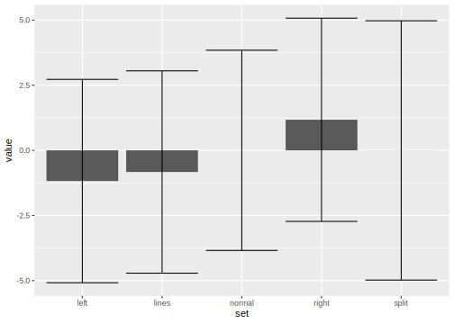

Tag 3 Tidy Data, Visualisierung und Statistische Größen
3.1 Wiederholung Tag 2
- Was ist das tidyverse?
- Welche Aufgaben erfüllen die wichtigsten
dplyrVerben? - Transfer: Was tut die folgende Codezeile?
starwars %>%
group_by(homeworld) %>%
mutate(mass = mass / max(mass, na.rm = TRUE))- Was ist ein P-Value?
- Was ist der Unterschied zwischen binomialverteilten und hypergeometrisch verteilten Daten?
Zunächst laden wir das tidyverse, da wir einige Funktionen und auch Beispieldaten daraus verwenden:
library(tidyverse)Als Beispiel nehmen wir wieder wieder das Starwars datenset.
starwarsWenn du die guten alten Spreadsheets vermisst (also Daten angezeigt wie in Excel und Co.),
wirst du die Funktion View mögen. Aber auch sonst kann sie sehr hilfreich
sein, falls die Ausgabe der Daten mal nicht ganz in die Konsole passt.
View(starwars)select wählt Spalten aus.
Dies geht über die Namen, aber auch mithilfe sogenanter select helper,
über die du in der Hilfe zu select mehr erfahren kannst (über ?select).
nur_namen_und_groesse <- starwars %>% select(name, height)
alle_features_mit_farbe <- select(starwars, ends_with("color"))
das_gleiche_datenset <- select(starwars, everything())filter hingegen filtert Zeilen, und zwar abhängig von
einer beliebigen Zahl an Bedingungen.
nur_gerade_massen <- starwars %>% filter(height %% 2 == 0)
nur_blaue_augen <- starwars %>% filter(eye_color == "blue")mutate fügt neue Spalten hinzu oder modifiziert existierende.
starwars %>%
mutate(all_colors = paste(hair_color, skin_color, eye_color)) %>%
select(all_colors, everything()) # Trick um die neu Spalte an den Anfang zu schiebenarrange ordnet die Zeilen abhängig von einer oder mehreren ausgewählten Spalten.
Hier beispielsweise nach absteigender Größe:
starwars %>% arrange(desc(height)summamrise fasst den Dataframe zusammen.
starwars %>%
summarise(mass = mean(mass, na.rm = TRUE),
height = mean(height, na.rm = TRUE))Wenn der Dataframe vorher gruppiert wurde, operieren summarise und
mutate entsprechend je innerhalb der Gruppen.
Hier beispielsweise die mittlere Masse pro Heimatplanet:
starwars %>%
group_by(homeworld) %>%
summarise(mass = mean(mass, na.rm = TRUE))Die oben bereits erwähnte Codezeile
starwars %>%
group_by(homeworld) %>%
mutate(mass = mass / max(mass, na.rm = TRUE) )dividiert also jede Masse durch die maximale Masse innerhalb des gleichen Heimatplaneten.
Zur Definition von P-Values sei auf das vorherige Kapitel unter 2.5.2 verwiesen. Sie werden dir im weiteren Kursverlauf und vorallem auch später in der Forschung noch häufiger über den Weg laufen.
Zum Unterschied zwischen einer hypergeometrischen und einer Binomialverteilung:
Die hypergeometrische Verteilung ergibt sich beim Ziehen (samplen)
ohne Zurücklegen. Als Beispiel sind in der Dokumentation
von R unter ?rhyper weiße und schwarze Bälle, die
zufällig aus einer Urne gezogen werden, angegeben.
x <- rhyper(10000, m = 50, n = 50, k = 80)
hist(x)Die Binomialverteilung hingegen entspricht dem Ziehen mit Zurücklegen, oder einfacher gesagt, einer Reihe von Münzwürfen.
x <- rbinom(n = 10000, size = 10, prob = 0.5)
hist(x, breaks = 0:10)3.2 Visualisierung als Schlüssel zum Verständnis
3.2.1 Anscombes Quartet
Und eine Notiz zu Tidy Data und dem tidyr package.
anscombe## x1 x2 x3 x4 y1 y2 y3 y4
## 1 10 10 10 8 8.04 9.14 7.46 6.58
## 2 8 8 8 8 6.95 8.14 6.77 5.76
## 3 13 13 13 8 7.58 8.74 12.74 7.71
## 4 9 9 9 8 8.81 8.77 7.11 8.84
## 5 11 11 11 8 8.33 9.26 7.81 8.47
## 6 14 14 14 8 9.96 8.10 8.84 7.04
## 7 6 6 6 8 7.24 6.13 6.08 5.25
## 8 4 4 4 19 4.26 3.10 5.39 12.50
## 9 12 12 12 8 10.84 9.13 8.15 5.56
## 10 7 7 7 8 4.82 7.26 6.42 7.91
## 11 5 5 5 8 5.68 4.74 5.73 6.89Anscombes Quartett ist besonders da:
Gleicher Mittelwert, gleiche Standardabweichung und der gleiche Korrelationskoeffizient, obwohl die einzelnen Datensets (1 bis 4) sehr unterschiedlich aussehen.
mean(anscombe$x1)## [1] 9mean(anscombe$x2)## [1] 9sd(anscombe$x1)## [1] 3.316625sd(anscombe$x2)## [1] 3.316625cor(anscombe$x1, anscombe$y1)## [1] 0.8164205cor(anscombe$x2, anscombe$y2)## [1] 0.8162365An dieser Stelle ein kleiner Trick aus dem Functional Programming:
Statt wie oben nacheinander beispielsweise den Mittelwert auszurechnen,
kannst du eine Funktion aus der map-Familie verwenden,
um eine Funktion (in diesem Fall mean) auf alle Elemente einer Liste
anzuwenden. Hierbei gibt map immer eine Liste zurück.
Zu jedem Datentyp (z.B. ganze Zahlen integer, Kommazahlen double)
gibt es zusätzlich noch eine eigen map-Version map_<datentype>,
die nur diesen Typ zurückgibt und es damit sicherer zu Programmieren macht,
da Dir Fehler explizit auffallen.
map(anscombe, mean) %>% head(2)## $x1
## [1] 9
##
## $x2
## [1] 9map_dbl(anscombe, mean) %>% head(2)## x1 x2
## 9 93.2.2 Exkurs Tidy Data
Tidy Data bedeutet:
Every row is an observation, every column is a feature
Aber das ist nicht immer leicht.
“Happy families are all alike; every unhappy family is unhappy in its own way.” \(-\) Leo Tolstoy
Tidy datasets are all alike, but every messy dataset is messy in its own way." \(-\) Hadley Wickham
Im anscombe Datensatz versteckt sich ein Feature in
den Spaltennamen! Das tidyr Package hilft uns dabei
dieses Feature explizit zu machen.
knitr::include_graphics("img/tidy-1.png")
Abb. 3.1: Following three rules makes a dataset tidy: variables are in columns, observations are in rows, and values are in cells. (Source: R4DS, Hadley Wickham)
anscombe_long <- anscombe %>%
pivot_longer(everything(),
names_to = c(".value", "set"),
names_pattern = "(.)(.)"
)Jetzt spielt unser Datenset gut mit dem restlichen Tidyverse, insbesondere ggplot2, zusammen.
anscombe_long %>%
ggplot(aes(x, y)) +
geom_point() +
facet_wrap(~set)anscombe_long %>%
group_by(set) %>%
summarise(m_x = mean(x),
m_y = mean(y),
sd_x = sd(x)) ## # A tibble: 4 x 4
## set m_x m_y sd_x
## <chr> <dbl> <dbl> <dbl>
## 1 1 9 7.50 3.32
## 2 2 9 7.50 3.32
## 3 3 9 7.5 3.32
## 4 4 9 7.50 3.32
Abb. 3.2: (Quelle: https://www.stellarscientific.com/accuris-smartreader-96-microplate-absorbance-plate-reader/
# Get the data from github-link
atpase_data <- readxl::read_xlsx("data/04_ATPase_assay.xlsx",
skip = 10,
.name_repair = "universal") %>%
select(-Content) %>%
rename(time = Time..s.)
# Clean data
clean_data <- atpase_data %>%
pivot_longer(starts_with("Sample"),
names_to = "sample",
values_to = "absorption") %>%
mutate(sample = str_remove(sample, "Sample."))
# visualize data
clean_data %>%
ggplot(aes(time, absorption, color = sample)) +
geom_line()# normalize data
normalized_data <- clean_data %>%
group_by(sample) %>%
mutate(absorption = absorption / max(absorption))
# visualize again
normalized_data %>%
ggplot(aes(time, absorption, color = sample)) +
geom_line()Aber was ist noch gleich eine Standardabweichung?
# explain mean, SD, SEM based on random numbers from normal distribution\[sd = \sqrt{\frac{\sum_{i=0}^{n}{(x_i-\bar x)^2}}{(n-1)} }\]
Warum n-1?
x = c(1,1,3,1)
mean(x)## [1] 1.5sd(x)## [1] 1\[var = \sigma^2\]
Standard Error of the Mean (SEM oder SE)
\[SEM=\sigma / \sqrt{n}\]
# generate random normal numbers
normal <- rnorm(1000, mean = 0, sd = 1)
# hist
hist(normal)
# mean
mean(normal)## [1] 0.03268081# sd
SD <- sd(normal)
# add lines
abline(v = SD, col = "red")
abline(v = -SD, col = "red")# explain percentages within the lines
# sem
sem <- function(x) sd(x) / length(x)
sem(normal)## [1] 0.0009995849curve(dnorm, -5, 5)Quantile-Quantile
qqnorm(normal)
qqline(normal, col = "red")3.2.3 The Datasaurus Dozen
Das Forschungspaper findet ihr hier (Matejka und Fitzmaurice 2017).
# install.packages("datasauRus")dinos <- datasauRus::box_plotsdinos <- read_csv("data/datasaurus.csv")tidy_dinos <- dinos %>%
pivot_longer(
everything(),
names_to = "set",
values_to = "value"
)Boxplots!
tidy_dinos %>%
ggplot(aes(set, value)) +
geom_boxplot()
# summarise data by set with SD, SEM, meansummary_dinos <- tidy_dinos %>%
group_by(set) %>%
summarise(
SD = sd(value),
SEM = sem(value),
value = mean(value)
)# create barplot with errorbars, SD or SEM
summary_dinos %>%
ggplot(aes(set, value)) +
geom_col() +
geom_errorbar(aes(ymin = value - SD,
ymax = value + SD))
summary_dinos %>%
ggplot(aes(set, value)) +
geom_col() +
geom_errorbar(aes(ymin = value - SEM,
ymax = value + SEM))# finally show the point plot and the jitter plottidy_dinos %>%
ggplot(aes(set, value)) +
geom_point(alpha = 0.01)
tidy_dinos %>%
ggplot(aes(set, value)) +
geom_jitter()Friends don’t let friends make barplots!
# And make histograms
tidy_dinos %>%
ggplot(aes(value, fill = set)) +
geom_histogram(position = "identity") +
facet_wrap(~set)
# And a density plot
tidy_dinos %>%
ggplot(aes(value, fill = set)) +
geom_density() +
facet_wrap(~set)3.3 Übung
3.3.1 Inclusion Bodies
Das Datenset lässt sich aus meinem Github Repository herunterladen:
read_csv("https://raw.githubusercontent.com/jannikbuhr/dataIntro19/master/data/03_inclusion_bodies.csv") %>%
write_csv("data/03_inclusion_bodies.csv")Natürlich kannst du auch direkt die Daten über den Link laden, aber so hast du sie für schlechte Zeiten (sprich: keine Internetverbindung) gleich gespeichert.
Disclaimer: Die Daten stammen aus dem letztjährigen Kurs und sind echte Daten, aber ich lüge euch bei der Bedeutung ein ganz klein wenig an um den biologischen Hintergrund schneller erklären und sie ohne Probleme veröffentlichen zu können.
# Erklärung Inclusion Bodies- If you want to impress me, do all the exercises
in a Rmarkdown document, add your conclusions and thoughts
along with the data analysis process and structure it
with meaningful headlines using
#. - Lies die csv-datei unter
data/03_inclusion_bodies.csv. - Mache tidy data daraus
- Visualisiere die Daten (mit ggplot2) als
- Jittered point plot
- Boxplot
- Zwei überlagerte Histogramme (Hinweise: Nutze position = “identity” damit R die Histogramme nicht stapelt sondern überlagert)
- Zwei überlagerte Dichte-Plots (Hinweis: Nutze den Parameter
alphaum beide sichtbar zu machen) - Einen Barplot mit Fehlerbalken, Hinweise:
- Erstelle zunächst einen Zusammenfassungs-Dataframe
- Nutze
geom_col, nichtgeom_bar
- BONUS: Mach die Plots hübsch! (e.g. colors, title, caption)
3.3.2 Lösung
Eine mögliche Lösung zeige ich euch dann nächste Woche flott live, danach landet der Code hier. Live mache ich das Ganze zur Motivation, um zu zeigen, wie schnell und effektiv die Datenauswertung laufen kann.